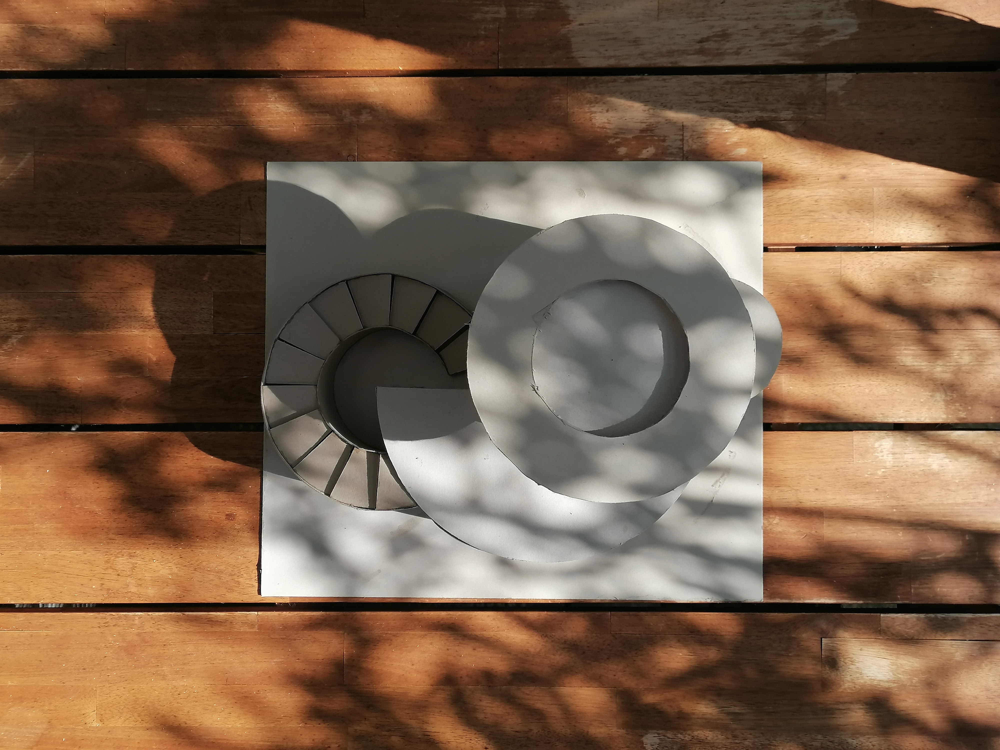
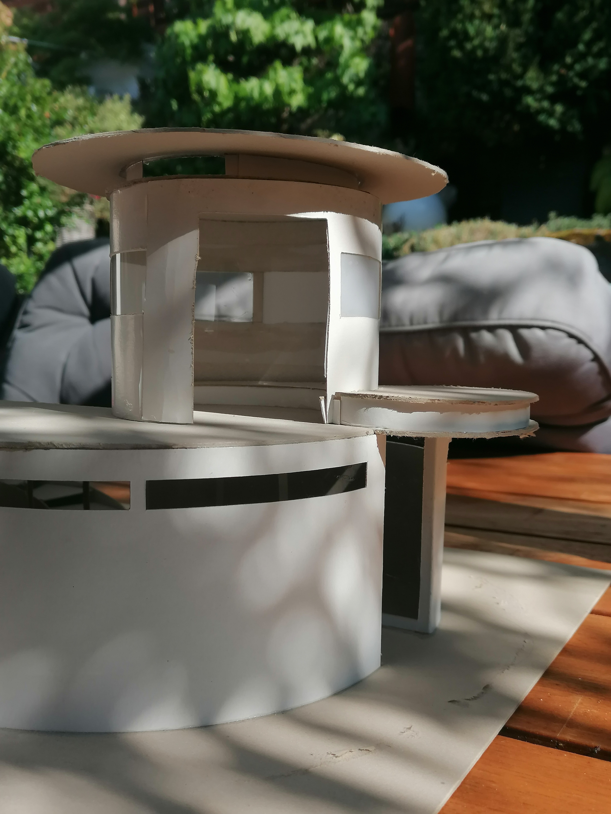
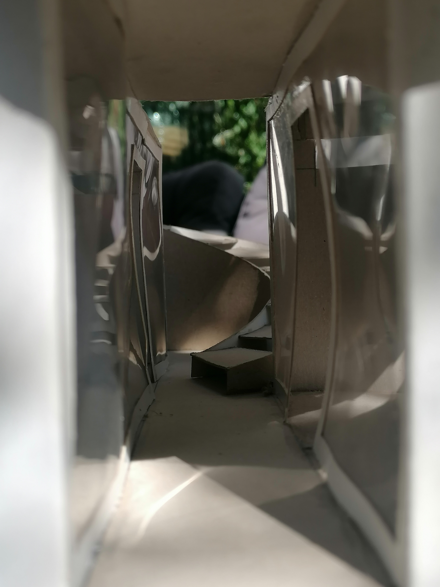
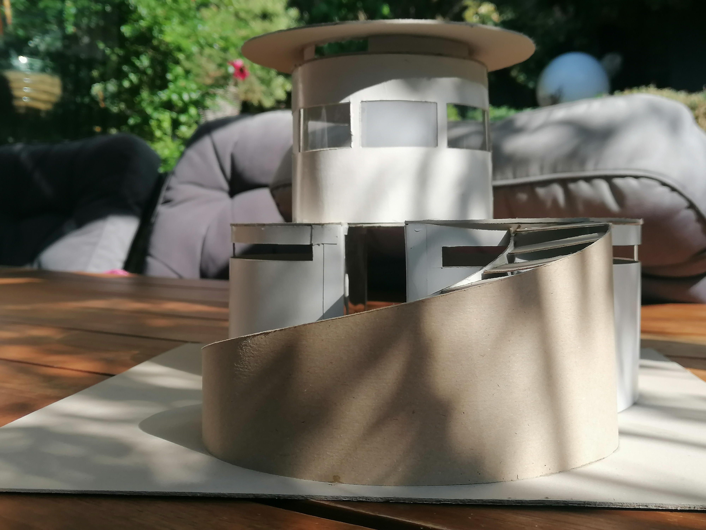
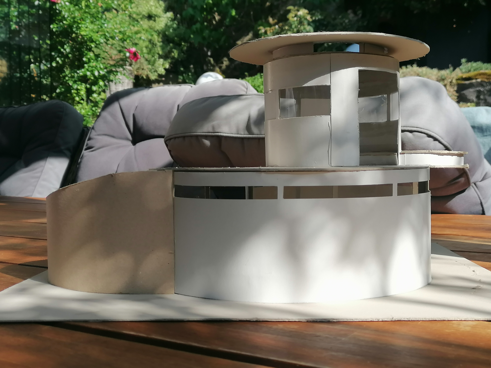
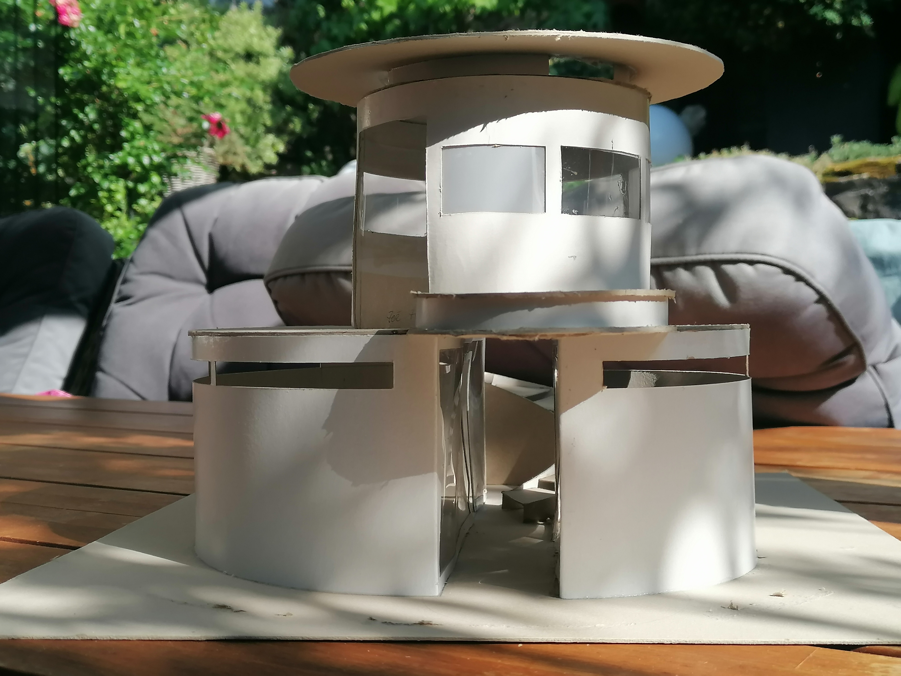
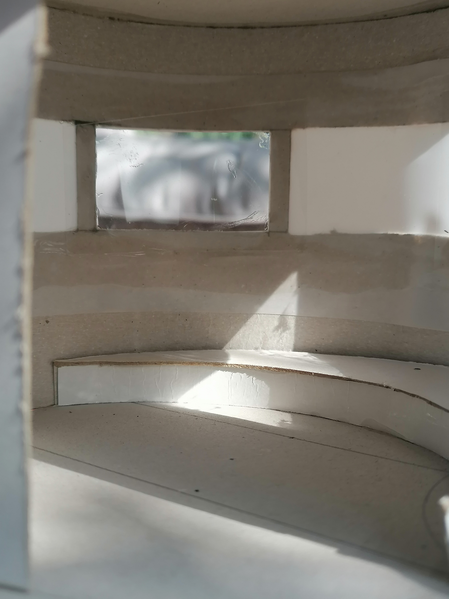
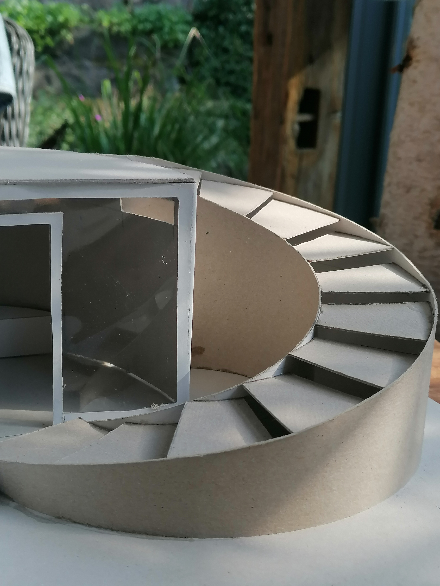
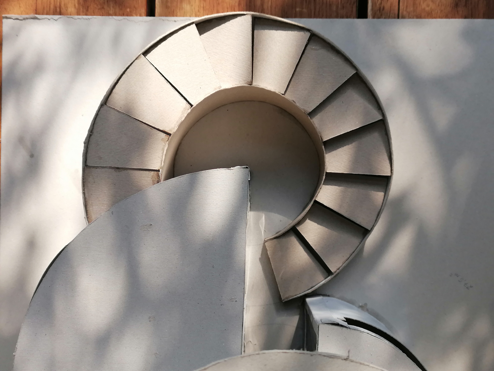

| Details: |
|
|---|---|
| Maße | 22cm x 43cm x 34cm |
| Material | Graupappe, einseitig weißbeschichtete Pappe, dünne Kunststoffplatte, Sekundenkleber, Heißklebepistole |
| Auftraggeberin | Kunstlehrerin |
| Architektin | Zoé Zimmermann |
| Baubeginn | Dezember 2019 |
| Fertigstellung | Januar 2020 |